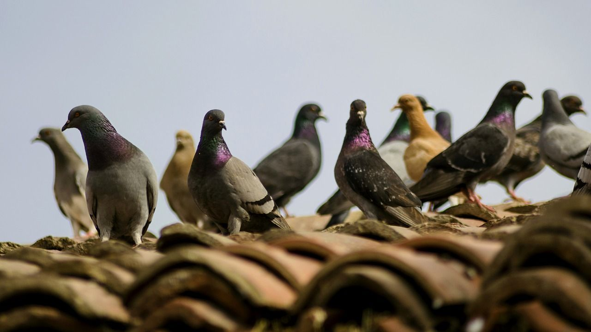
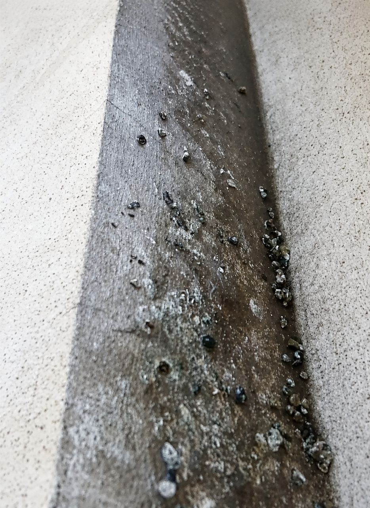
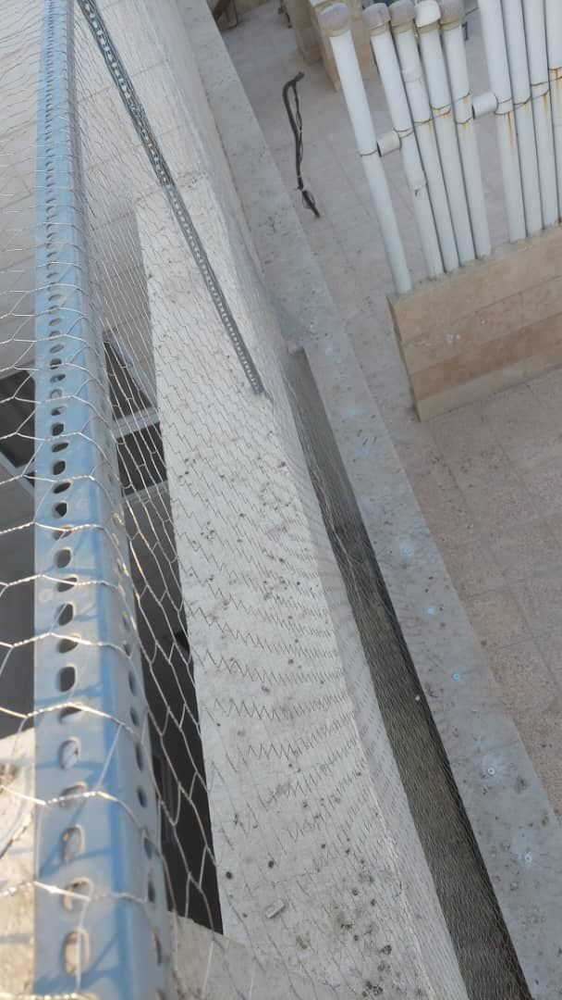
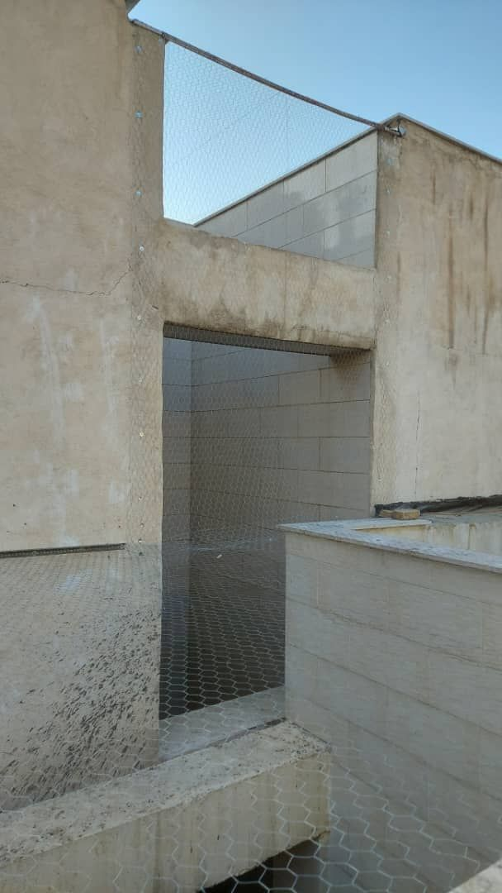

کبوتران، این پرندگان به ظاهر آرام و صلحجو، در سالهای اخیر به یکی از معضلات جدی ساکنان شهرهای بزرگ، بهویژه تهران، تبدیل شدهاند. لانهسازی آنها در پشت پنجرهها، کانالهای کولر، پشتبامها و درز انقطاع ساختمانها، نهتنها باعث ایجاد ظاهری ناخوشایند میشود، بلکه میتواند خسارات جبرانناپذیری به سلامت و اموال شما وارد کند.

فضولات کبوتران نهتنها نمای ساختمان را تخریب میکند، بلکه محیطی مناسب برای رشد قارچها و باکتریهای بیماریزا فراهم میآورد. همچنین، کبوتران میتوانند ناقل بیماریهای خطرناکی همچون سالمونلا، توکسوپلاسموز و هیستوپلاسموز باشند. علاوه بر این، کنه کبوتر که یکی از آفات خطرناک شهری است، مستقیماً با حضور کبوتران در ساختمانها مرتبط است و میتواند وارد منازل شده و ساکنان را با گزشهای خود آزار دهد.
در این مقاله جامع، شما را با بهترین و مؤثرترین روشهای دور کردن کبوتران، از راهکارهای فیزیکی و شیمیایی گرفته تا روشهای طبیعی و مدرن، آشنا میکنیم.
| نوع خسارت | توضیح |
|---|---|
| تخریب ساختمان | اسید موجود در فضولات کبوتران، نمای ساختمان، سیمان و حتی فلزات را خورده و تخریب میکند. |
| انتقال بیماری | کبوتران ناقل بیماریهای خطرناکی مانند سالمونلا، مننژیت و بیماریهای قارچی هستند. |
| آلودگی محیط | فضولات و پرهای کبوتران باعث ایجاد بوی نامطبوع و آلودگی محیط میشود. |
| جذب آفات ثانویه | حضور کبوتران، کنه کبوتر، مگسها و سایر حشرات موذی را به ساختمان جذب میکند. |
| خسارت به تأسیسات | لانهسازی کبوتران در کانالهای کولر و تأسیسات، باعث کاهش راندمان و خرابی آنها میشود. |
| آسیبهای روحی | صدای مداوم و فضولات کبوتران، آرامش ساکنان را مختل میکند. |
کنترل و دور کردن کبوتران نیازمند یک رویکرد جامع و چندمرحلهای است. در ادامه، مؤثرترین روشهای دفع کبوتر را بهترتیب اولویت بررسی میکنیم:
روشهای فیزیکی بهدلیل ماندگاری بالا و عدم آسیب به پرندگان، بهترین گزینه برای دور کردن کبوتران محسوب میشوند.
توریهای گالوانیزه یا پلاستیکی با چشمههای ریز (حداکثر ۱.۳۵ سانتیمتر) یکی از مطمئنترین روشها برای جلوگیری از ورود کبوتران به ساختمان هستند. این توریها باید روی تمام نقاط ورودی مانند:
نصب شوند.
مزایا:
هزینه: قیمت نصب توری به متراژ و نوع توری بستگی دارد.


شاخکهای کبوتر پران، میلههای تیز و نوکداری هستند که با نصب روی سطوح مختلف، از نشستن و لانهسازی کبوتران جلوگیری میکنند. این شاخکها در انواع استیل، پلیکربنات و پلاستیکی موجود هستند.
نقاط مناسب نصب:
مزایا:
قیمت: هر عدد شاخک کبوتر پران حدود ۴۸۰ هزار تومان است.

این سیمها که شبیه بوتههای خار طراحی شدهاند، با ایجاد یک سطح ناهموار و غیرقابل نشستن، کبوتران را از محیط دور میکنند.
مزایا:
پس از پاکسازی لانههای کبوتر، سمپاشی محیط با مواد ضدعفونیکننده و دافع پرندگان ضروری است. این کار از بازگشت مجدد کبوتران و همچنین جلوگیری از رشد قارچها و باکتریهای بیماریزا مؤثر است.
محلول سرکه یکی از راهکارهای طبیعی و مؤثر در دور کردن کبوتران است. اسیدیته و بوی تند سرکه، بهویژه برای کبوتران آزاردهنده است. برای تهیه این محلول:
سایر مواد طبیعی:
این دستگاهها با تولید امواج صوتی با فرکانس بالا که برای انسان قابل شنیدن نیست، کبوتران و سایر پرندگان را فراری میدهند.
مزایا:
معایب:
برای نتیجهگیری نهایی و اطمینان از دور شدن قطعی کبوتران، بهترین راهکار، ترکیبی از روشهای فیزیکی و شیمیایی است. شرکتهای تخصصی با استفاده از تجهیزات پیشرفته راپل (کار در ارتفاع)، عملیات زیر را انجام میدهند:
از انجام کارهای زیر جداً خودداری کنید:
| اقدام اشتباه | دلیل خطر |
|---|---|
| استفاده از سموم کشنده | غیرقانونی و غیرانسانی است و میتواند برای سایر حیوانات و انسان خطرناک باشد. |
| تخریب لانه با بیاحتیاطی | ممکن است باعث انتشار کنه کبوتر و سایر آفات به داخل ساختمان شود. |
| استفاده از مواد سوزاننده | خطر آتشسوزی و آسیب به ساختمان را به همراه دارد. |
| نصب غیراصولی تجهیزات | ممکن است به پرندگان آسیب برساند یا کارایی لازم را نداشته باشد. |
پس از دور کردن کبوتران، با رعایت این نکات میتوانید از بازگشت مجدد آنها جلوگیری کنید:
خیر، شاخکهای استاندارد فقط از نشستن پرندگان جلوگیری میکنند و به دلیل طراحی خاص، هیچ آسیبی به آنها نمیرسانند.
بهترین زمان، اواخر زمستان و اوایل بهار، قبل از شروع فصل تخمگذاری کبوتران است.
هزینه به متراژ، نوع توری و پیچیدگی کار بستگی دارد. برای دریافت قیمت دقیق، با کارشناسان تماس بگیرید.
خیر، این دستگاهها در فرکانسهای قابل شنیدن برای انسان کار نمیکنند و کاملاً ایمن هستند.
برای آلودگیهای جزئی، روشهای طبیعی و شاخکها قابل اجرا هستند. اما برای آلودگیهای شدید و مواردی که نیاز به کار در ارتفاع دارد، حتماً از متخصصان کمک بگیرید.
دور کردن کبوتران از ساختمانها نهتنها به حفظ سلامت و آرامش ساکنان کمک میکند، بلکه از تخریب ساختمان و هزینههای سنگین تعمیرات نیز جلوگیری مینماید. با استفاده از روشهای اصولی و تخصصی مانند نصب توری و شاخک، سمپاشی و پاکسازی اصولی، میتوانید بهطور قطعی از شر این پرندگان مزاحم خلاص شوید.
شرکت سمپاشی نانوفناوران با بیش از ۲۰ سال تجربه و استفاده از پیشرفتهترین تجهیزات و روشهای دور کردن کبوتران، آماده ارائه خدمات تخصصی و تضمینی به شماست. تیم کارشناسان مجرب ما با استفاده از تجهیزات پیشرفته راپل (کار در ارتفاع)، عملیات پاکسازی، سمپاشی و نصب تجهیزات فیزیکی را در بالاترین نقاط ساختمان با خیال راحت انجام میدهند.
🚀 همین حالا اقدام کنید:
📞 تماس فوری: ۰۹۱۲۰۷۰۵۷۴۶
💬 درخواست مشاوره رایگان: از طریق واتساپ یا ایتا
🔗 مشاهده سایر خدمات: کنترل آفات مسکونی